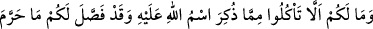
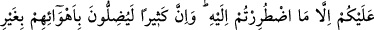
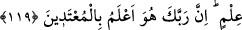

119. Üzerine Allah’ın adı anılıp kesilenden yememenize sebep ne? Oysa Allah,
çaresiz yemek zorunda kaldığınız dışında, haram kıldığı şeyleri size açıklamıştır.
Doğrusu bir çokları bilgisizce kendi kötü arzularına uyarak saptırıyorlar.
Muhakkak ki Rabbin haddi aşanları çok iyi bilir.
Üzerine Allah’ın adı anılmış olanlardan niçin yemeyesiniz?” Üzerine Allah’ın ismi
anılarak boğazlanmış olan hayvanları hangi sebeble yemeyesiniz ki?
Fahreddin Razî der ki: “Müşrikler, üzerine Allah’ın adı anılarak boğazlanan
hayvanın etini yemeyi mübah sayarlardı. İhtilaf konusu olan bunun helâlliği ya da
haramlığı değildi. Asıl ihtilaf, müşriklerin helâl saydıkları leş etini mü’minlerin haram
kabul etmeleriyle ortaya çıkıyordu. Hal böyle olunca, ayette üzerine Allah’ın adı
anılmış olanı yemenin mübahlığından söz edilmesi abes olurdu. Çünkü bu takdirde zaten
üzerinde ittifak olan bir hususda tekrar hüküm verilirken, esas ihtilaf konusu olan leşin
yenilip yenilmemesi hususuna bir açıklık getirilmemiş olurdu. Onun için onlara şöyle
cevap verilmiştir: “Yeyin” (118. âyet) emrinin mânâsı: “Yemenizi sadece üzerine
Allah’ın adı anılanla sınırlayın.” demektir. Bu âyetteki “niçin yemeyesiniz?” sözünün
mânâsı ise: “Yemenizi neden onunla sınırlamayasınız.” demektir ki yalnızca leş yemenin
haram kılındığını ifade eder.
Halbuki Allah Teâlâ, size haram kıldıklarından “çaresiz yemek zorunda
kaldıklarınızın dışında” ki bunlar da zarûret hâlinde helaldir.
“  ” harfi, “müddet” manasında masdariyyet “mâ”sıdır. Buna göre bu istisnânın
” harfi, “müddet” manasında masdariyyet “mâ”sıdır. Buna göre bu istisnânın
mânâsı şöyle olur: “Allah size zaruret vakti haricinde bütün vakitlerde haram olan
şeyleri açıklamıştır.”
Şayet “  ” harfinin ism-i mevsul olduğu kabul edilirse bu takdirde zaruret halinde
” harfinin ism-i mevsul olduğu kabul edilirse bu takdirde zaruret halinde
yenilen şeyler helâl olmuş ve haram kılınanlara dâhil olmamış olur.
“Size haram kıldığı şeyleri açıklamıştır.” Size haram kılmadıklarını yine bu sûredeki
şu ayetle açıklamıştır: “De ki: Bana vahyolunanda, (bu haram dediklerinizi) yiyen
kimse için haram edilmiş bir şey bulamıyorum...” (el-En‘âm 6/145) Bu ayete göre
burada haramlığı sayılanların dışındaki her şey helâl olarak kalmıştır. Ancak şu âyette
belirtilenler bu genel hükmün dışındadırlar: “Leş, kan, domuz eti, Allah’dan başkası
adına boğazlanan, boğulmuş, (tahta veya taşla) vurul(arak öldürül)müş, yukarıdan
düşmüş, boynuzlanmış ve canavar parçalayarak ölmüş olan hayvanlar -henüz
canları çıkmadan kesmeniz hariç-, dikili taşlar (putlar) üzerine boğazlanan
hayvanlar ve fal okları ile kısmet (şans) aramanız size haram kılındı. Bunlar fısktır